Reaction of Epoxides
Because of the strain associated with the three-membered ring, epoxides undergo a variety of ring-opening reactions, the characteristic feature of which is nucleophilic substitution at one of the carbons of the epoxide ring with the oxygen atom as the leaving group.
 An Epoxide | + HNu: | (stereoselective) ⟶ |
Acid-Catalyzed Ring Opening
In the presence of an acid catalyst, such as sulfuric acid, epoxides are hydrolyzed to glycols. As an example, acid-catalyzed hydrolysis of oxirane gives 1,2-ethanediol (ethylene glycol).
 Oxirane (Ethylene oxide) | + H2O | H+ ⟶ | HOCH2CH2OH 1,2-Ethanediol |
Mechanism Acid-Catalyzed Hydrolysis of an Epoxide
Step 1: Add a proton. Proton transfer from the acid catalyst to oxygen of the epoxide gives a bridged oxonium ion intermediate.
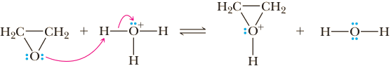Step 2: Make a new bond between a nucleophile and an electrophile and simultaneously break a bond to give stable molecules or ions. Backside attack of H2 O on the protonated epoxide (a bridged oxonium ion) opens the three-membered ring.
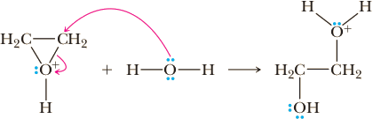Step 3: Take a proton away. Proton transfer to solvent completes the formation of the glycol.
H2COH—CH2—OH
Attack of a nucleophile on a protonated epoxide shows an anti stereoselectivity typical of SN2 reactions; the nucleophile attacks anti to the leaving hydroxyl group, and the 9OH groups in the glycol thus formed are anti. As a result, hydrolysis of an epoxycycloalkane yields a trans-1,2-cycloalkanediol.
1,2-Epoxycyclopentane (Cyclopentene oxide) (achiral) | + H2O | H+ ⟶ | 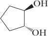 (1R,2R)-1,2-Cyclopentandiol | + | 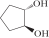 (1S,2S)-1,2-Cyclopentandiol |
| A racemic mixture |
Note the similarity in ring opening of this bridged oxonium ion intermediate and the bridged halonium ion intermediate in electrophilic addition of halogens or X2/H2O to an alkene (Sections 6.3D and 6.3E). In each case, the intermediate is a three-membered ring with a heteroatom bearing a positive charge, and attack of the nucleophile is anti to the leaving group. Because there is some carbocation character developed in the transition state for an acid-catalyzed epoxide ring opening, attack of the nucleophile on unsym- metrical epoxides occurs preferentially at the carbon better able to bear a partial positive charge.
| 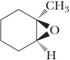 1-Methyl-1,2-epoxycyclohexane | + CH3OH | H2SO4 ⟶ |
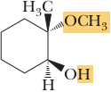 2-Methoxy-2-methylcyclohexanol |
The stereochemistry of acid-catalyzed ring openings is SN2-like in that attack of the nucleophile is from the side opposite the bridged oxonium ion intermediate. The regiochemistry, however, is SN1-like. Because of the partial carbocation character of the transition state, attack of the nucleophile on the oxonium ion intermediate occurs preferentially at the more substituted carbon. That is, attack occurs at the site better able to bear the partial positive charge that develops on carbon in the transition state in analogy to attack on a bridged bromonium ion.
At this point, let us compare the stereochemistry of the glycol formed by acid-catalyzed hydrolysis of an epoxide with that formed by oxidation of an alkene with osmium tetroxide (Section 6.5A). Each reaction sequence is stereoselective but gives a different stereoisomer. Acid-catalyzed hydrolysis of cyclopentene oxide gives trans-1,2-cyclopentanediol; osmium tetroxide oxidation of cyclopentene gives cis-1,2-cyclopentanediol. Thus, a cycloalkene can be converted to either a cis glycol or a trans glycol by the proper choice of reagents.
 | ⟶ | RCO3H | + H2O | H+ ⟶ | (1R,2R)-1,2-Cyclopentandiol | + | (1S,2S)-1,2-Cyclopentandiol | |
| ⟶ | OsO4, t-BuOOH |  (achiral) |
Nucleophilic Ring Opening
Ethers are not normally susceptible to reaction with nucleophiles. Epoxides, however, are different. Because of the strain associated with a three-membered ring, epoxides undergo ring-opening reactions with a variety of nucleophiles. Good nucleophiles attack an epoxide ring by an SN2 mechanism and show an SN2-like regioselectivity; that is, the nucleophile attacks at the less hindered carbon. Following is an equation for the reaction of methyloxirane (propylene oxide) with sodium methoxide in methanol.
 | + CH3OH | CH3O−Na+ ⟶ SN2 | CH3CHOH—CH2—OCH3 |
Mechanism Nucleophilic Opening of an Epoxide Ring
Step 1: Make a new bond between a nucleophile and an electrophile and simultaneously break a bond to give stable molecules or ions. Backside attack of the nucleophile on the less hindered carbon of the highly strained epoxide opens the ring and displaces O−.
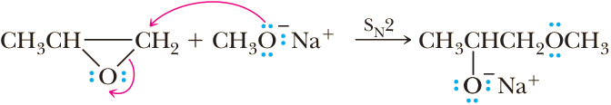Step 2: Add a proton. Proton transfer completes the reaction.
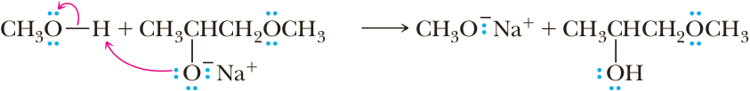The nucleophilic ring opening of epoxides is also stereoselective; as expected of an SN2 reaction, attack of the nucleophile is anti to the leaving group. An illustration is the reaction of cyclohexene oxide with sodium methoxide in methanol to give trans-2-methoxycyclohexanol.
 | + CH3OH | CH3O−Na+ ⟶ SN2 |
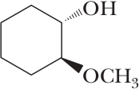 (1R,2R)-2-Methoxycyclohexanol | + | 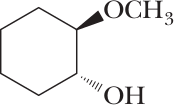 (1S,2S)-2-Methoxycyclohexanol |
The value of epoxides lies in the number of nucleophiles that bring about ring opening and the combinations of functional groups that can be prepared from them. The most important of these ring-opening reactions are summarized in the following chart.
| H2O/H3O+ ⟶ | HOCH2(CH-CH3)OH A glycol | |
| Na+SH−/H2O ⟶ | HSCH2(CH-CH3)OH A β-mercaptoalcohol | ||
| 1.HC≡C−Na+ ⟶ 2.H2O | HC≡CH2(CH-CH3)OH A β-alkynylalcohol | ||
| NC≡C−Na+/H2O ⟶ | NC≡CH2(CH-CH3)OH A β-hydroxynitrile | ||
| NH3 ⟶ | H2NCH2(CH-CH3)OH A β-aminoalcohol |
The reactions with a terminal alkyne anion or the cyanide anion are particularly noteworthy because a new carbon-carbon bond is formed in each reaction. Finally, treatment with LiAlH 4 reduces an epoxide to an alcohol. Lithium aluminum hydride is similar to sodium borohydride, NaBH4, in that it is a donor of hydride ion, H:−, which is both a strong base and a good nucleophile. In the reduction of a substituted epoxide by LiAlH 4 , attack of the hydride ion occurs preferentially at the less hindered carbon of the epoxide, an observation consistent with SN2 reactivity.
((R)-Styrene oxide)
1. LiH4
⟶
2.H2O